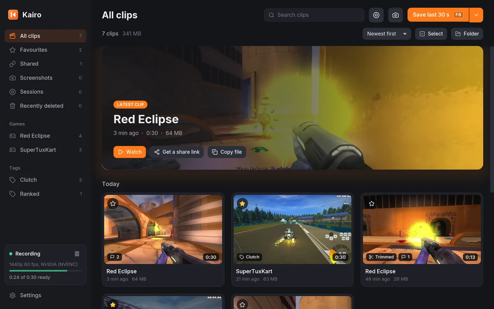
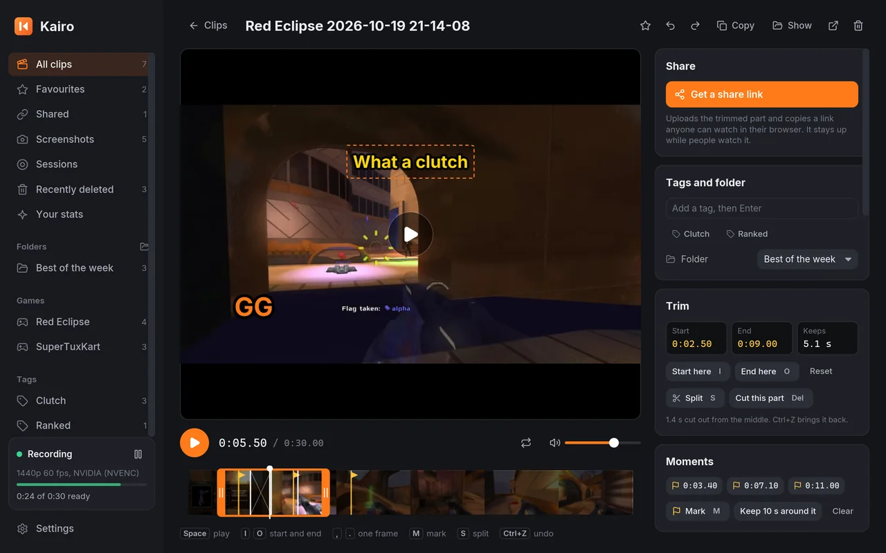
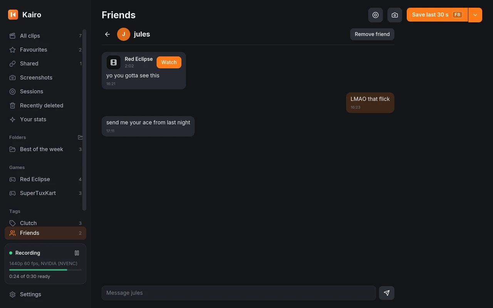
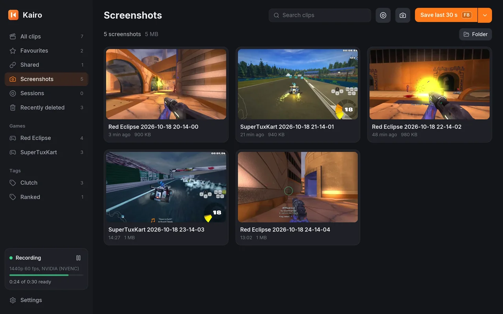
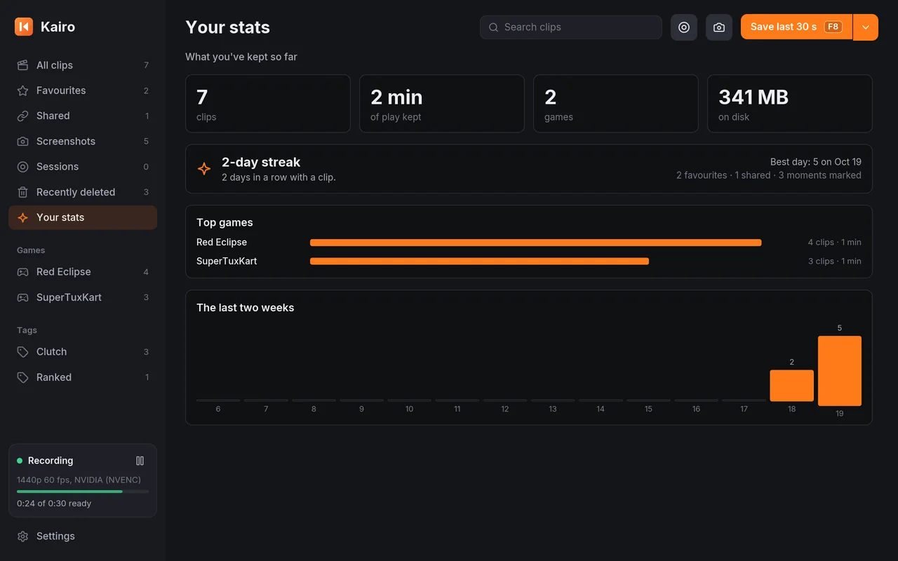
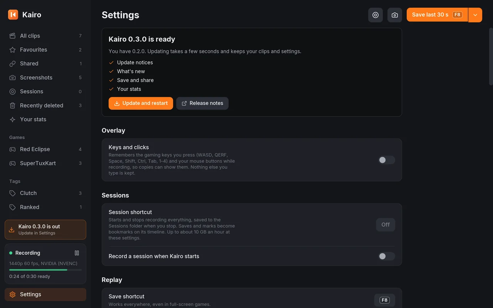
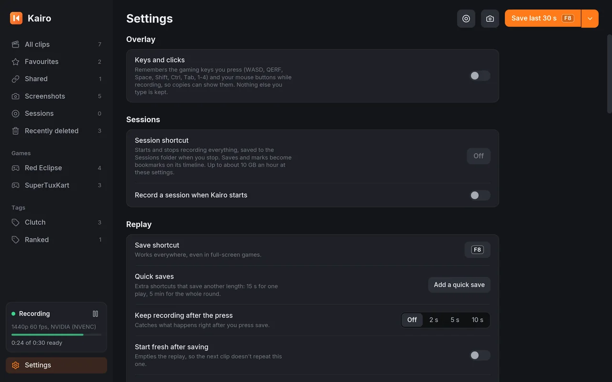
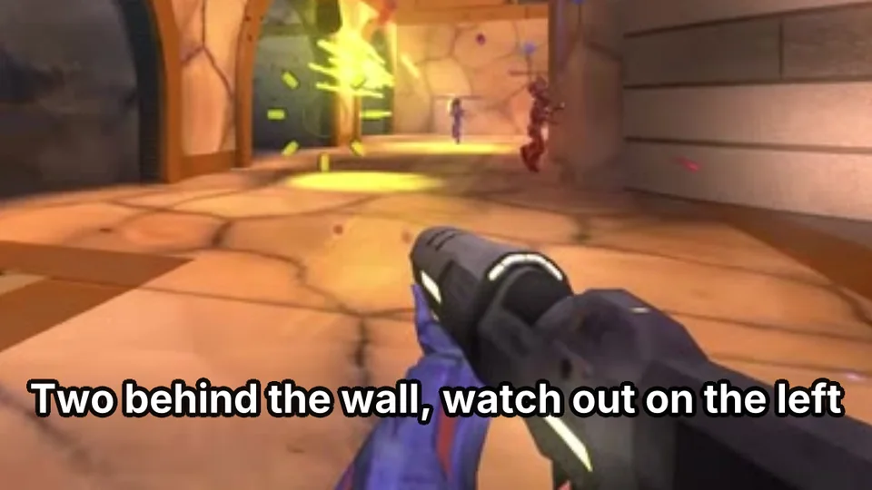
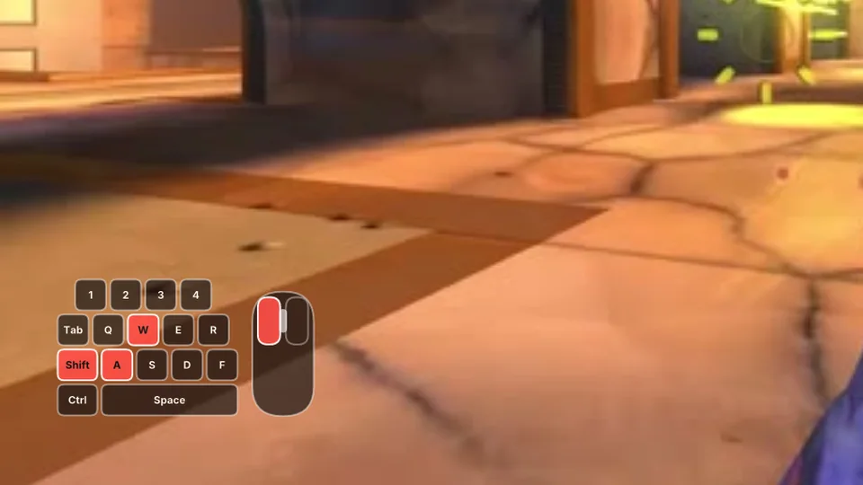

Press F8. Keep the play.
Kairo keeps the last 30 seconds of your game in memory. Press F8 and they’re saved as a clip in about a second. Free and open source for Windows, macOS and Linux.
Footage: Red Eclipse gameplay by Premitre, CC BY 3.0
- Free with no account
- No watermark, no ads
- Open source, MIT licence
- Windows, macOS and Linux
- GPU encoding on NVIDIA, AMD, Intel and Apple
Press it, or F8 on your keyboard.
One key. The last 30 seconds.
Kairo records quietly on your graphics card’s own encoder and keeps a rolling replay in memory, so your games keep their frames. Press F8, or say “clip that”, and the clip is cut from what’s already recorded. Nothing is encoded twice.
It’s named after the game you’re playing and lands in your library. Change the key and the length, from 5 seconds to 20 minutes, in Settings.
Replays from any game.
Kairo records what’s on your screen, so it works with every game you play: shooters, racers, sandboxes. These replays come from free, open-source games.
-
Red EclipseCanyon firefight
Video by Premitre, CC BY 3.0
-
MinetestLighting the TNT
Video by PantheraLeo1359531, CC BY-SA 3.0
-
SuperTuxKartOff the line
Video by kimden, CC BY 3.0
-
VoxeLibreStraight down the mine
Video by VoxeLibre, CC BY 3.0
-
SuperTuxKartNight race in the rain
Video by kimden, CC BY 3.0
-
Red EclipseRunning the flag home
Video by Premitre, CC BY 3.0
Edited excerpts: cut, cropped and resized. Full credits and licences.
Everything after the save.
Your clips land in a library sorted by game. Open one to trim it, caption it or share it, without leaving Kairo. These are real screens from the app.
Every clip, already sorted.
Clips are named after the game and grouped by day, with the latest one up top. Filter by game or tag, search, star your favourites.
Deleted clips wait 30 days in Recently deleted, with Undo. Kairo can keep the folder under a size limit for you, and favourites always stay.

Cut it in seconds.
Drag the handles to trim, press S to split and Delete to cut the dull part out of the middle. Ctrl+Z undoes anything, and a plain trim saves instantly at full quality.
Put text on it and drag it into place, with a pop, slide or blur as it comes in. Change the speed and look, add fades and music, balance game, mic and voice chat, and make copies for phones.

Straight to your friends.
Sign in with Google, pick a username and add friends by theirs. Press Send to friends on any clip, tick one friend, a few or Everyone, and add a message if you like.
They get a pop-up on their PC and watch with one click, and you can chat on the Friends page. Messages are kept on Kairo’s server and aren’t end-to-end encrypted. What’s kept and who can see it.

F9 for screenshots.
Screenshots get their own place next to your clips, named after the game, ready to copy or share the same way.
F10 marks a moment while you play. The clip that holds it shows a flag there, so you can jump straight to it.

Your stats, counted.
How many clips you’ve kept, how much play that is, your top games and the last two weeks at a glance.
Save a clip every day and watch your streak grow. Your favourites, shared links and marked moments are counted too.

Never miss an update.
Kairo looks for a new version every few hours. When one is out, a notice tells you what’s in it, and one click installs it in a few seconds.
Each download is checked against its published checksum first, your clips and settings stay, and Kairo shows you what’s new once it restarts.

Set it once.
Pick the key and the length, add quick saves with their own lengths, keep recording for a few seconds after you press, or record a whole session.
Kairo starts with your computer, sits in the tray and updates itself. You won’t need to open it until you’ve got something to watch.


Captions, made offline.
Kairo writes subtitles of what’s said, right on your computer. Edit them, keep them as an .srt file or burn them into the clip.

Show what you pressed.
The keys and clicks overlay shows your gaming keys and mouse buttons over a clip. Nothing else you type is kept. On Windows.
And the rest of it.
Light on your games
Encoded on the GPU: NVIDIA NVENC, AMD AMF, Intel and others, Apple VideoToolbox, with x264 as a fallback. H.265 where your card has it.
Say “clip that”
Voice clipping saves a clip when you say so. Speech is recognised on your computer and never sent anywhere.
Every sound on its own track
Game sound and your mic are mixed, and each is also kept separately for editing. Turn your mic up or down and test it in Settings, and Kairo finds a mic you plug in without a restart. On Windows 11, voice chat gets its own track too.
Longer clips and sessions
Clips up to 20 minutes, quick-save keys with their own lengths, and whole sessions of up to 5 hours with bookmarks.
Made for Discord
One click makes a copy under 10 MB (or 50 and 500 MB for Nitro) and puts it on your clipboard, or posts it to your channel.
Montages and more formats
Join clips into one video that dips to black between them. Export GIFs, vertical 9:16 copies and slow motion.
Nothing leaves your PC
No ads, no tracking and no watermark, and no account unless you use Friends. A clip is only uploaded when you share it or send it to friends.
Save and share, one key
Give it a shortcut and one press saves the clip, uploads it and copies the link, ready to paste in a chat.
Send clips to friends
Sign in with Google, add friends by username and send them clips and messages. They get a pop-up on their PC, and the clip plays with one click.
Your stats
Clips kept, play time, storage, your top games, the last two weeks and your streak of days with a clip.
Never miss an update
A notice tells you when a new version is out and what’s in it. Each download is checked against its published checksum.
Text that moves
Type a line, drag it where you want it and pick how it arrives: a pop, a slide or a blur, drawn with motion blur.
Your webcam in the corner
Turn it on and your camera goes in a corner of every clip you save, at the size you pick.
Only while you play
Keep a replay only while a game is in front, give each game its own length and quality, and never record the apps you name (Windows).
Folders and badges
Sort clips into folders, and earn 15 achievements as your library grows. Dark, light or match your system.
Scriptable
Save, screenshot, share and caption from the command line, with
kairo saveand friends. Handy on Wayland.
Get Kairo.
Free, for good. Version 0.5.0, released 22 October 2026. ffmpeg is included, so there’s nothing else to install.
For Windows 10 and 11, 64‑bit
Download the installerkairo-v0.5.0-windows-x64-setup.exe · 32 MB
Installs for you without administrator rights and uninstalls from Settings › Apps. It isn’t code-signed yet, so Windows may say it protected your PC: choose More info, then Run anyway.
Kairo runs on computers. Send yourself this page and open it there.
Other downloads
- Windows, no installerUnzip anywhere and run kairo.exe · 16 MB
- macOS 11 or newerApple silicon and Intel · 26 MB
- Linux, x86_64X11, or XWayland with a shortcut for
kairo save· 16 MB
Check your download against SHA256SUMS.txt. Release notes and every version. Downloads come from GitHub.
Questions, answered.
Is it really free?
Yes, all of it. There’s no paid tier, no ads and no watermark on your clips, and you don’t need an account. Kairo is open source under the MIT licence, so anyone can read and build the code.
Will it slow my games down?
Very little. The replay is encoded by your graphics card’s video engine, not its game cores, and saving cuts the clip from what’s already encoded instead of encoding it again. If no hardware encoder is available, Kairo uses x264 on the processor.
Where do my clips go?
Into Videos/Kairo as MP4 files named after the game, with game sound, your microphone and voice chat on their own tracks. You can change the folder in Settings.
Does Kairo collect any data?
Not unless you sign in to Friends. There are no analytics and no tracking, and you don’t need an account. Kairo only goes online to check for updates, to download the speech model the first time you turn on voice clipping or captions, to upload a clip when you share it or post it to your Discord channel, and for Friends, which keeps your username, friends and messages on Kairo’s server. The details.
How do updates work?
Kairo checks GitHub a few minutes after it starts and every few hours. When a new version is out, you get a notice with what’s new and an Update now button. It downloads the package for your system, checks it against the release’s checksums and restarts; your clips and settings stay. You can turn the checks off in Settings.
Windows says it protected my PC.
The installer isn’t code-signed yet, so SmartScreen doesn’t recognise it. Choose More info, then Run anyway. To be sure the file is the real one, compare it with SHA256SUMS.txt on the release page.
Does it work on macOS and Linux?
Yes. On macOS 11 or newer, allow Screen Recording when asked; desktop sound needs macOS 13. On Linux, X11 works; on Wayland, run Kairo under XWayland and bind kairo save to a key in your desktop’s settings.
Can I record my friends in voice chat?
Kairo can, but where you live you may need their permission to record or share what they say. Ask first, and follow the rules of the games and services you use.
I used Rewindr. Do I lose anything?
No. Rewindr was Kairo’s name before version 0.2.0. It updates itself to Kairo, or the installer replaces it, and your settings, clips and start-up setting carry over.